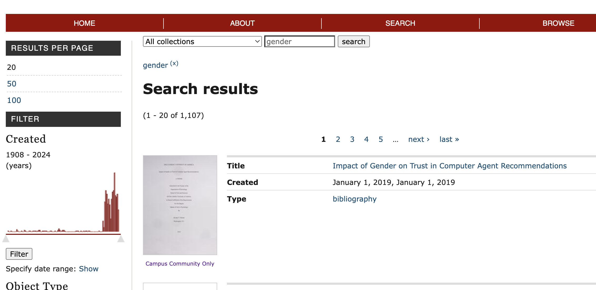
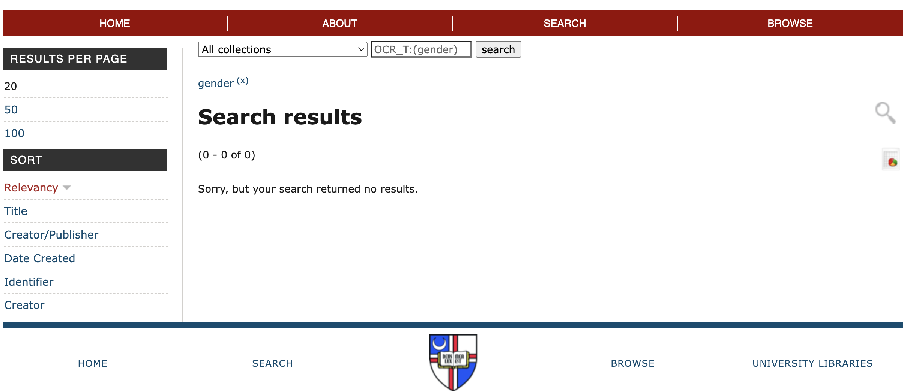

LSC 555 Assignment #2
Samantha Horton
Part 1 - Analyze the website using the usability framework
Step 1: Input and Output Table
When using the Tower Archives (1922-2018) to look up "gender", these were my inputs and outputs.
| Input |
Output |
Type |
| Search "gender" |
1,107 results |
Titles and contents |
| Filter date range to 1918-1919 |
3 results |
Dates and contents |
| Select first result: "Power of the Ordinary in Religious Organizations of Women" |
Opens digitized version of document |
Contents |
| search document for word: "gender" |
1 result |
Text |
Step 2: Heuristic Review of System
- Visibility of System Status: The status of the system was not well communicated. The site took a while to load some pages and the delay was not noted with any messages.
- Match between System and Real World: There was some confusion with clicking on the banner at the top of the page, which did not return me to the home page but rather took me to a whole other site for the library catalogue. But otherwise the site was laid out fairly typically with menu items at the top and bottom, and the filters when searching appeared on the left hand side in a column.
- User Control and Freedom: Some steps were easy to undo like exiting out of a search by clicking on the x by the search term, but it was difficult to retrace steps without using the back arrow. There was no “new search” button or any equivalent to redo.
- Consistency and Standards: There were two ways to search, the first from the home page which just took in key words and the second when the “search” menu bar was clicked which went to another page with an advanced search option. However, I could not get any results when using “keyword” from the drop down menu in the advanced search and had to change it to “title” or “description” instead. It was unclear what “keyword” meant and why it was not returning any results when “title” and “description” did.
- Error Prevention: No error messages. I kept doing searches that returned no results and the system did not give me any feedback on how to search better. But other than that, I did not experience very many errors with the site so it did fine overall preventing errors.
- Recognition over Recall: It was sometimes difficult getting back to previous searches I had run because I had to remember what I had searched.
- Flexibility and Efficiency of Use: The search filters on the left hand side of the results page was very helpful for narrowing down results, especially the option to narrow down the search by year. The year graph also showed how many hits per year appeared in the search. I think if I was more used to the system, these filters would help even more to customize my search.
- Aesthetic and Minimalistic Design: I think the website was mostly successful in this, but the repeated placement of the home, search, and browse bottoms at both the top and bottom of the page was more confusing than helpful.
- Help Users Recognize, Diagnose, and Recover from Errors: I didn't notice any error messages other than “sorry, your search has returned no results”, and even then there were no suggestions for how to improve the search.
- Help and Documentation: No help page was present, but there was a documentation page linked at the bottom of the home page that outlined how some of the search tools worked but did not help with troubleshooting or questions.
Step 3: Summary of Strengths and Weaknesses
Strengths
- Flexibility: Ability to filter search by year, type, collection, etc.
- Aesthetic and Minimalistic Design: Website layout was simple and it was easy to find search and filters

Weaknesses
- Help Users Recognize, Diagnose, and Recover from Errors: No help with errors, especially when search did not return any results
- User Control and Freedom: Difficult retracing steps without using back arrows in browser

Part 2 - Conduct a "mini-usability" test
Step 4: Please see the observation form and questionnaire that was uploaded to Brightspace.
Step 5: Comparison of Results from Heuristic Review and Mini-Usability Test
For the usability test, the biggest issue for my volunteer was how long it took pages to load. When my volunteer opened up digitized documents to look inside their contents, it would take a while for anything to come up. In addition, every time she tried to zoom in on a section, the page would refresh again and reload. My volunteer had the great idea of searching for key terms like ”war” inside the Tower volumes from around the years of WWII and the Vietnam War, which was great for finding material, but again the pages took a while to load. We could see highlighted spots where the words were, but the pages would remain blank. This was very frustrating. Overall, my volunteer found using the Tower Archives very time-consuming. The system was not intuitive, even when my volunteer would figure things out. Although my volunteer appreciated the access to various different primary and secondary source collections, she found that it took too long to load a lot of pages and that the search was not as advanced or specific as she needed it to be.
Overall, I think both the heuristic review and the usability test highlighted issues with error messaging and the lack of intuitiveness of the system. It required too much experimentation to actually be useful in a short amount of time. My two biggest suggestions would be incorporating error messaging and more guidance for the search. For instance, if my search does not return any results, there should be a message saying "try searching by title" or some other message guiding the user to expand or re-word their search. Adding a "new search" button and an "undo"/"return to previous search" button would also help make searching easier.